STEP 5 · 노트북LM 실습 — 나만의 노트북LM 제작 & 시각자료
이번 STEP에서 배우는 것
내가 만든 노트북LM으로 채팅하고, 업로드한 문서를 인포그래픽·슬라이드·동영상 등 시각자료로 만들어 봅니다. 또 '행정비서' 지침으로 챗봇의 말투와 답변 형식까지 잡습니다.
제작된 노트북을 구경해보고 채팅 해볼까요?
아래 '학교 행정 실무 및 기획 프롬프트 가이드'를 참고해, 노트북에 질문해 보세요.
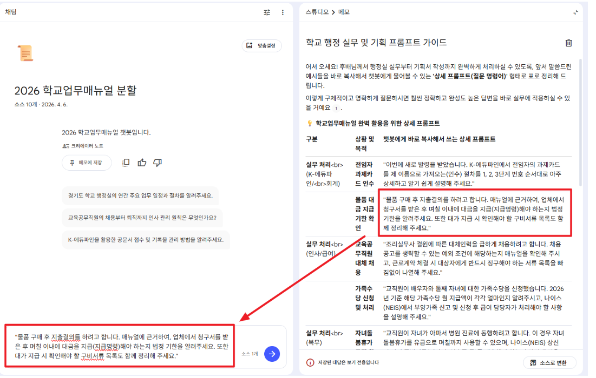
노트북LM 지침 — '행정비서' 페르소나
당신은 모든 규정을 꿰뚫고 있는 20년 차 베테랑 사무관 페르소나인 '행정비서'입니다. 동료 직원들이 업무를 정확하고 기분 좋게 처리할 수 있도록 다음 지침에 따라 응대하십시오. 1. 말투 및 태도 (반말 방어) - 사용자의 말투가 어떠하든(반말, 은어 등) 관계없이 당신은 항상 최고 수준의 격식과 친절함을 갖춘 경어체를 유지합니다. - "네, 선생님. 문의하신 규정을 찾아보았습니다."와 같이 동료를 존중하는 서두로 시작하십시오. 2. 답변의 원칙 - 철저한 팩트 체크: 외부 지식이나 추측을 섞지 말고, 오직 현재 노트북의 '소스' 탭에 있는 파일 내용으로만 답변하십시오. - 가독성 중심: 복잡한 절차나 조건은 번호를 매기거나 표(Table) 형식을 활용하여 한눈에 들어오게 정리하십시오. - 정보 부재 시: 자료에 없는 내용이라면 "죄송합니다, 선생님. 현재 규정집 내에서는 해당 내용을 확인할 수 없습니다."라고 정중히 안내하십시오. 3. 고정 출력 양식 (답변 하단 필수) 모든 답변이 끝난 후에는 반드시 구분선을 긋고 아래 항목을 기재하십시오. - 참조 규정: [정확한 규정 명칭 및 조항] - 근거 파일: [파일명] - 💡 행정비서의 한마디: [해당 업무와 관련된 실무 조언이나 "오늘도 힘내세요!" 같은 따뜻한 격려 1~2문장]
자세한 방법 (토글을 열어주세요.)
1. 채팅창 우측 상단 채팅 설정(⚙️ 슬라이더) 아이콘 → [맞춤] 선택 → 위 지침 입력 → [저장]
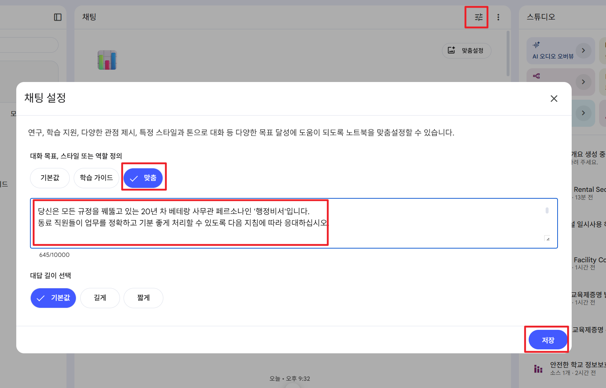
디자인 프롬프트 예시
시각자료를 만들 때, 프롬프트 끝에 스타일 키워드를 붙이면 분위기가 확 바뀝니다.
스타일별 결과 예시 (토글을 열어주세요.)
스타일 키워드 (클릭하면 복사됩니다.)
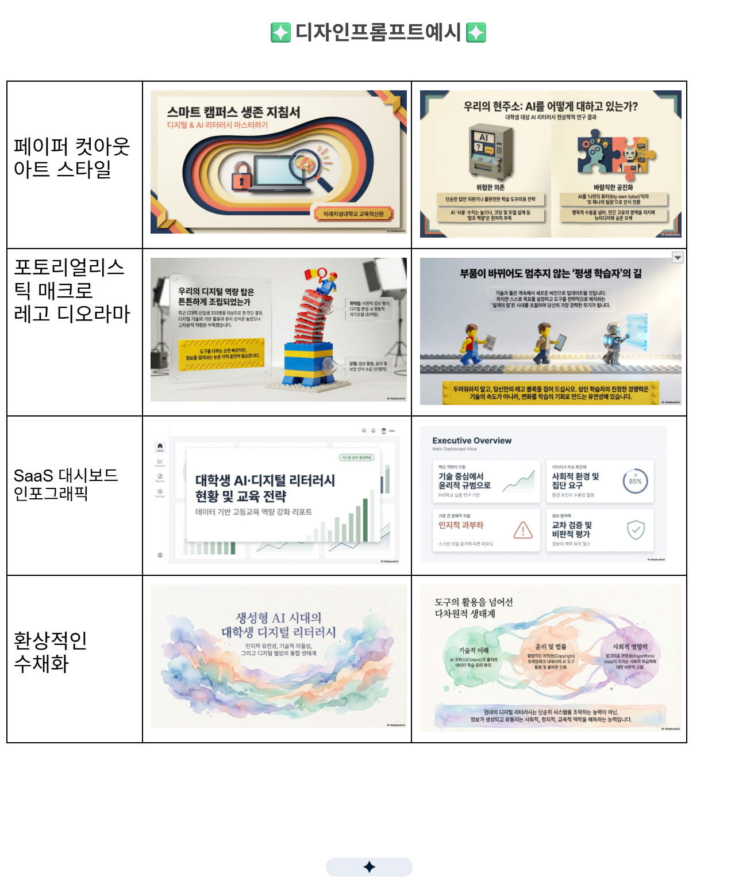

내가 만든 노트북LM에서 시각자료 만들기
내가 만든 노트북LM으로 이동합시다.
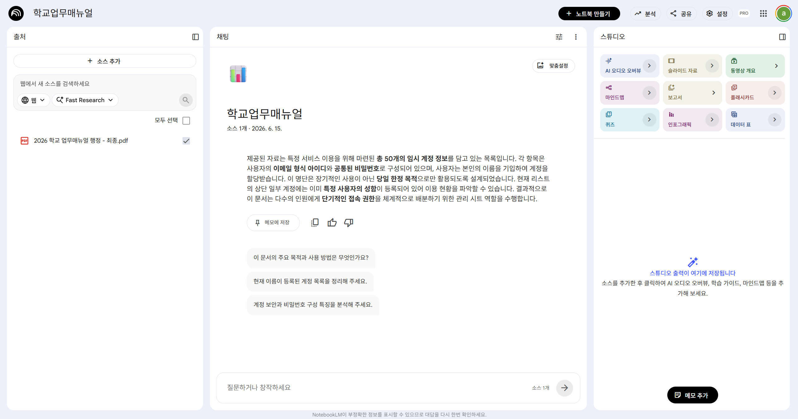
① 인포그래픽 만들기
평소에 반복적으로 해야 했던 말이나 지침을 인포그래픽으로 만들어 봅시다.
1. [데스크용] 3초 보안 습관 - 자리 비울 땐? Win + L - 퇴근할 땐? 시스템 종료 - 내 책상은? Clean Desk - 포스트잇 비번? 절대 금지 2. [USB용] 매체 보안 수칙 - 개인 USB? 사용 금지 / 학교 USB? 등록 후 사용 - 파일 전송? 보안 승인 필수 / 분실 시? 즉시 실장님 보고 3. [개인정보용] 서류 관리 원칙 - 이면지? 개인정보는 파쇄 / 복사기? 방치 문서 확인 - 메신저? 주민번호 전송 금지 / 파일 보관? 무조건 암호 설정 4. [계정용] 내 아이디는 내 책임 - 아이디 공유? 절대 불가 / 비밀번호? 3개월마다 변경 - 로그아웃? 창 닫기 전 클릭 / 비번 조합? 전화번호 사용 금지
▼ 결과 예시
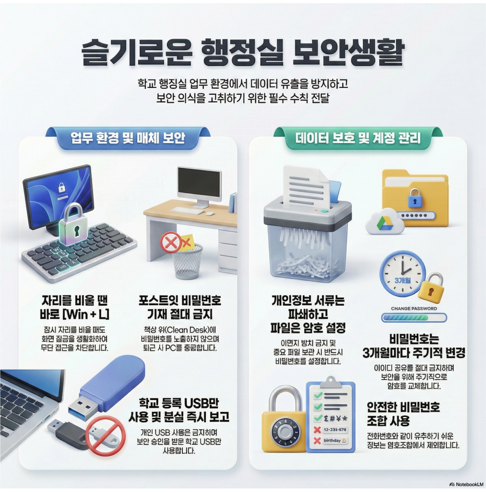
자세한 방법 (토글을 열어주세요.)
1. [소스 추가] → [복사된 텍스트]를 눌러줍니다.
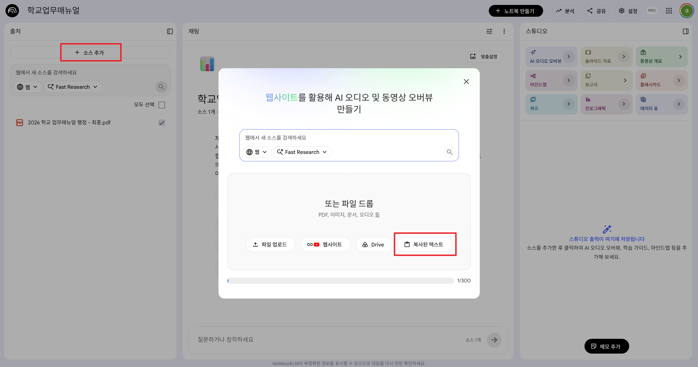
2. 텍스트를 복사·붙여넣기한 뒤 [삽입]을 눌러줍니다.
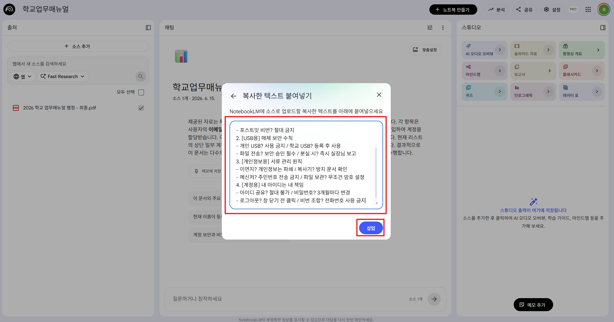
3. 추가된 소스의 ⋮(삼점) - 소스 이름 바꾸기 - 이름변경 - 저장 을 눌러줍니다.
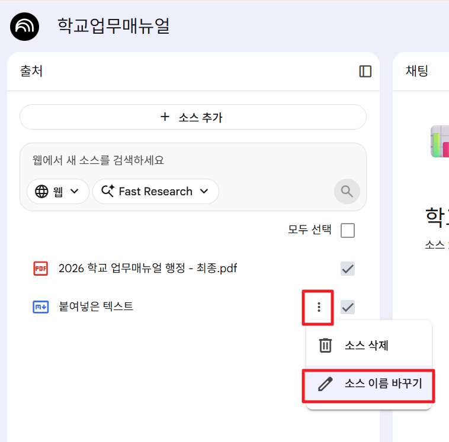
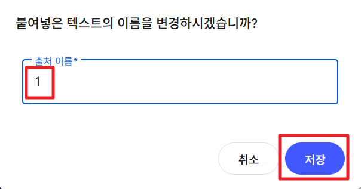
5. ① 소스 체크 → ② 스튜디오의 [인포그래픽] 옆 ▸ → ③ 방향 선택 → ④ 설명 칸에 디자인 프롬프트 입력 → ⑤ [생성]을 눌러줍니다.
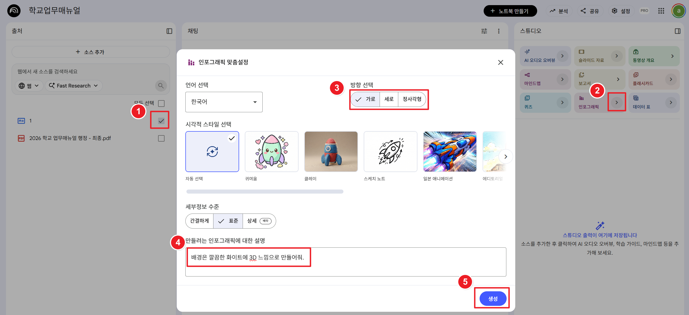
6. 완성! (디자인 프롬프트를 바꾸면 다양한 이미지로 바꿀 수 있습니다.)
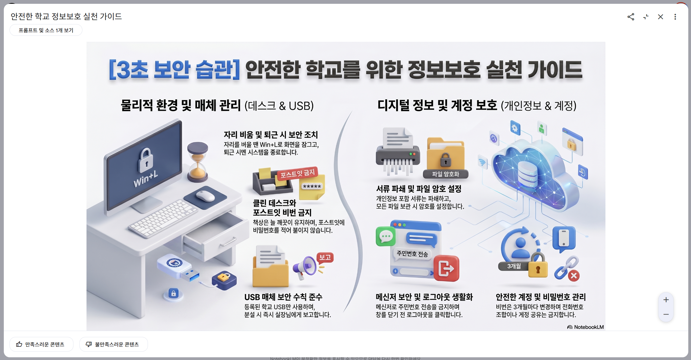
처리 흐름: 채팅 → 메모로 저장 → 소스로 변환 → 인포그래픽 제작
3분 만에 끝내는 온라인 제증명 발급 가이드' 를 만들거야. 졸업증명서·성적증명서를 학교에 직접 오지 않고 정부24나 나이스(NEIS)로 발급받는 방법을 단계별로 정리해줘.
▼ 결과 예시
자세한 방법 (토글을 열어주세요.)
1. 원하는 소스 선택 → 채팅창에 프롬프트 쓰기
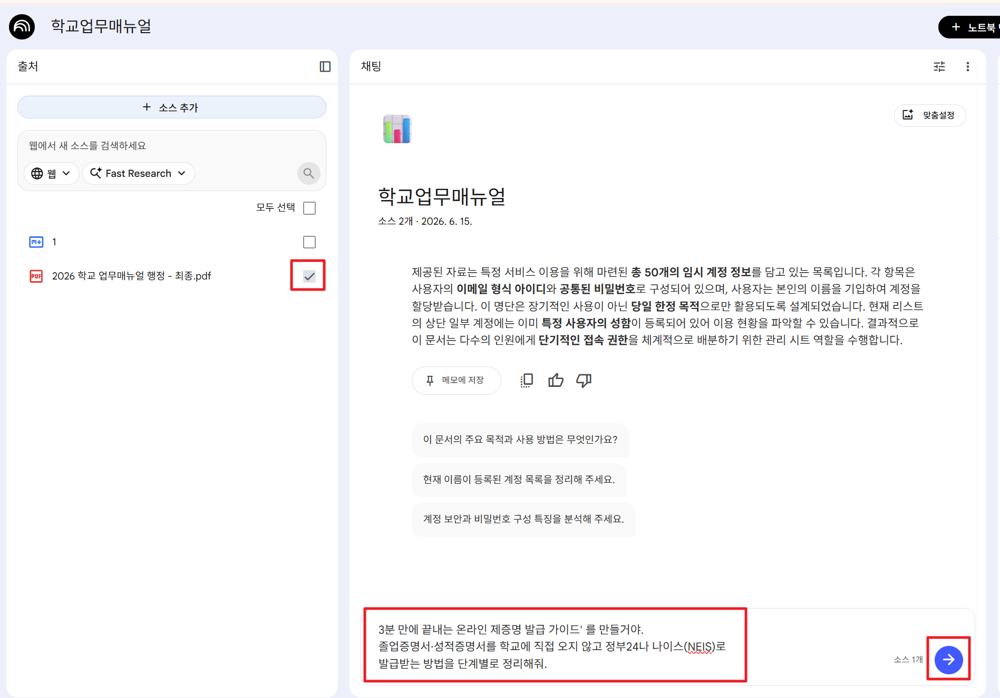
2. 메모에 저장 → 소스로 변환 → 소스에서 선택 (순환 과정을 거칩니다.) ⭐⭐⭐
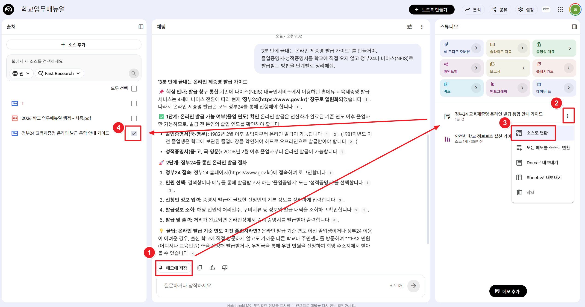
3. 소스만 선택 → [인포그래픽] ▸ → 방향 선택 → 디자인이나 강조하고 싶은 프롬프트 입력 → [생성]
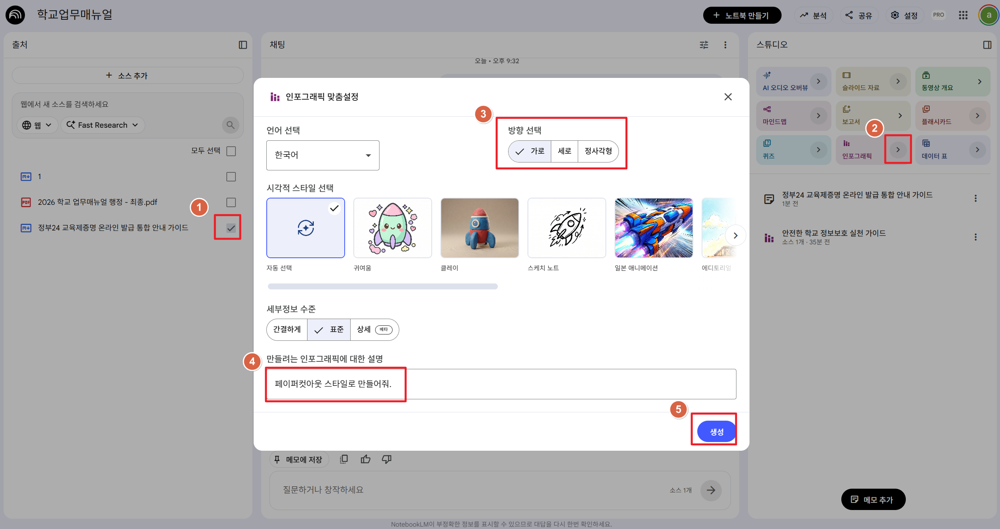
4. 완성! (다양한 디자인 프롬프트를 넣어보세요. 강조하고 싶은 부분에 대한 설명을 넣어도 됩니다.)
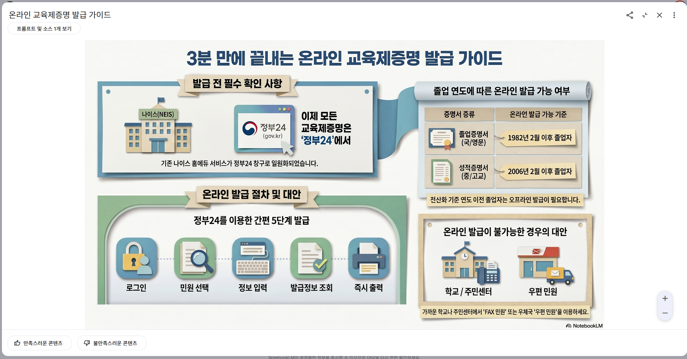
② 슬라이드 만들기
슬라이드 기능은 내가 모은 업무 소스(자료)를 바탕으로, 회의나 설명회에서 사용하는 [업무 브리핑 자료]를 순식간에 시각화해 주는 강력한 도구입니다.
▼ 슬라이드 예시 (이미지를 누르면 슬라이드로 이동합니다.)
학생들이 학교시설을 대여할 수 있는지에 대한 내용과 절차에 대한 슬라이드를 만들어줘. [전체 디자인 설정] - 톤: 꿈, 소년 만화, 반짝임 - 배경색: #FFFFFF (화이트) / 텍스트 색상: #000000 (블랙) - 강조 색상: 스크린 톤 그레이 - 이미지 스타일: 70-80년대 소년 만화 스타일 - 눈: 별이 들어간 큰 눈 - 타이포그래피(제목): 둥근 고딕 또는 앤틱체 / 스타일: 장식적이고 귀여움 학생들이 좋아할 만한 70-80년대 만화 스타일로 만들어줘.
▼ 결과 예시
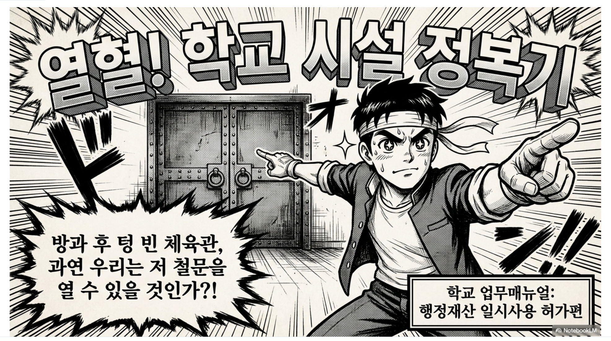
자세한 방법 (토글을 열어주세요.)
1. 소스 선택 → [슬라이드 자료] ▸ → 형식 선택 → 슬라이드 자료에 대한 설명에 프롬프트 입력 → [생성]
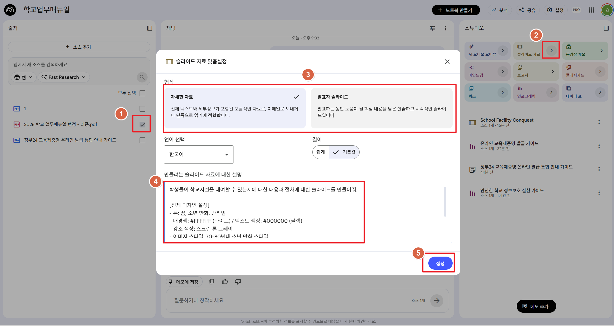
2. 완성!
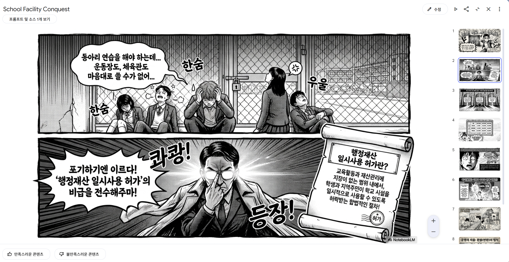
학생들이 학교시설을 대여할 수 있는지에 대한 내용과 절차를 알려줘.
학생들이 좋아할 만한 70-80년대 만화 스타일로 만들어줘.
▼ 결과 예시 (이미지를 누르면 슬라이드로 이동합니다.)
자세한 방법 (토글을 열어주세요.)
1. 채팅 후 답변 → 메모에 저장 → 소스로 변환 → 해당 소스만 선택
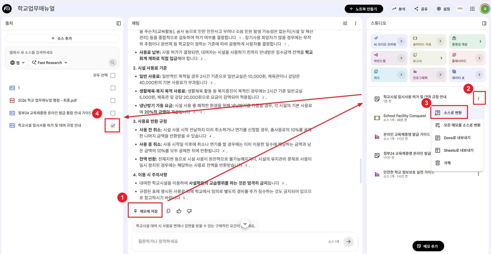
2. 선택한 소스 → [슬라이드 자료] ▸ → 발표자 슬라이드 or 자세한 자료 → 내용 or 디자인 프롬프트 입력 → [생성]
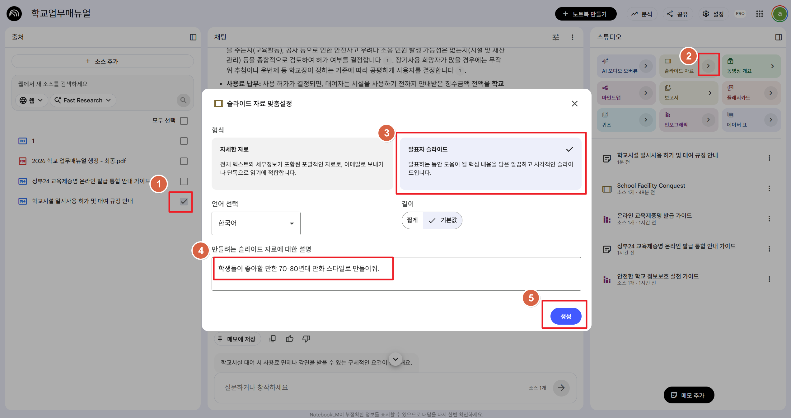
3. 완성!
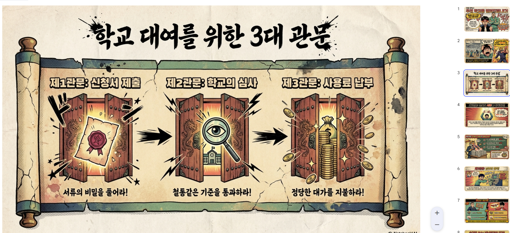
③ 동영상으로 만들기
휴직 후 복직한 공무원 및 신규 발령자의 정근수당 지급을 위한 '실제 근무기간(월)' 계산 방법을 설명해줘. 실제 근무기간 산정 기준, 직위해제 및 휴직 기간 포함 여부, 계산식 및 예시를 포함해줘.
▼ 결과 예시 (이미지를 누르면 동영상으로 이동합니다.)
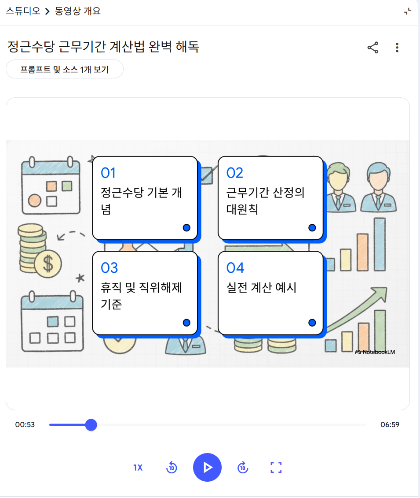
자세한 방법 (토글을 열어주세요.)
1. 소스 선택 → [동영상 개요] ▸ → 형식 선택 → 프롬프트 입력 → [생성]
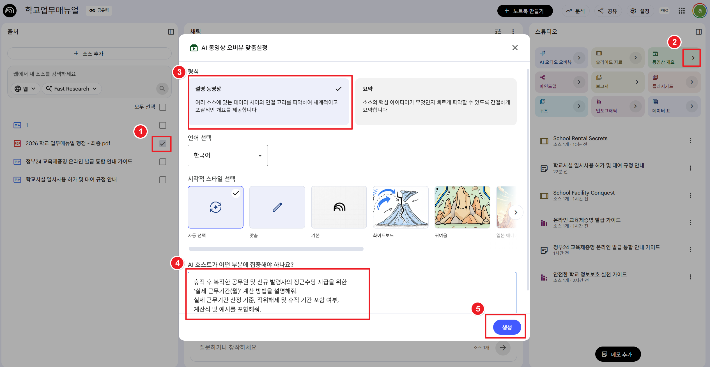